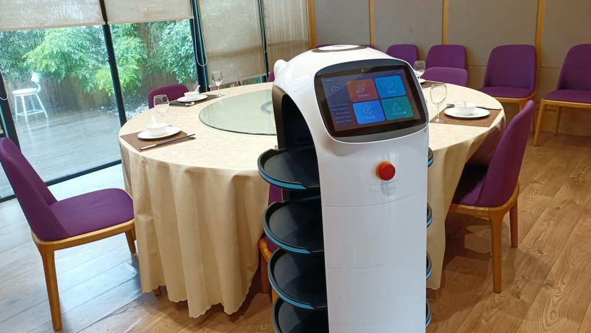

美食是人生中不可或缺的生活必需品，也是一段讓饕客盡情享受的過程。然而自2019年底新冠肺炎疫情爆發以來，餐飲業也面臨到前所未有的危機，必須轉變服務型態；隨著與病毒共存的生活來臨，餐廳除了提供外帶方案，內用更掀起了一波「機器人風潮」，究竟透過機器人，可以如何為餐飲業服務加成，並在疫情時代下賦予新價值？
▎餐飲業困境 - 環境與物價的多重考驗
▶外出用餐的風險
疫情讓全球人心惶惶，外出脫下口罩用餐成為一大考驗，因此要如何減少店員與顧客的接觸，讓顧客願意到餐廳安心的用餐，便成為餐飲業近年的首要考驗。
▶人才招募困難
除了疫情因素外，餐飲業流動率長期偏高，加上台灣少子化問題，在餐廳工作流程沒有減少的狀況下，人才招募數量不足，更遑論人才到職後適不適任等培訓相關問題。
▶營業成本提升
而物價高漲、薪水跟著漲，對餐廳而言，食材、人力成本皆大幅上升，疫情攪局使來客數降低，利潤慘跌。
餐飲業經營不易，閉店數節節攀升，究竟如何能為餐飲業開拓一條生存之路？
▎AI機器人能為餐飲業做到什麼？
你可能想像不到AI可以如何應用在餐飲業上，讓我們從一位顧客要到餐廳用餐的流程開始，加入AI機器人會有哪些不同：
-- 用餐前 --
①顧客小美上Ai3美式餐廳官網點選「我要訂位」，Chatbot（聊天機器人）詢問小美相關訂位資訊（分店、日期與時間、用餐人數、特殊備註等）。
②完成訂位後， Chatbot展開「主廚推薦餐點」以及「近期優惠活動」資訊給小美；讓小美好奇的是「尋找最適合你的Ai3美食」小測驗活動，小美跟著Chatbot的指示與幾道問答，最後得到的美食是「水牛城辣雞翅」與餐點相關介紹；愛吃辣的小美很有興趣，直接收入口袋名單。
③小美突然想起同行友人有小朋友，想詢問是否有包廂或是偏角落的座位，於是點選 Chatbot圖文選單上的「轉接專人」，餐廳的服務人員立即上線與小美進行文字交談，並完成適合的座位安排。
④ 餐廳系統自動發送用餐提醒給明天有訂位的小美。
-- 用餐時 --

⑤小美直接掃描QRCODE線上進行點餐；這時上菜的是一台送餐機器人，不僅一次可以送好幾桌，餐點內容也都正確無誤；小美對這樣的送餐模式感到很有趣，立刻拍照打卡上傳到FB。
⑥用完餐離開餐廳時，餐廳系統自動發送滿意度問卷給小美。
-- 用餐後 --
⑦Ai3美式餐廳透過測驗結果的數據分析發現，大部分的顧客都偏好辣味料理，因此決定針對辣味料理開發餐點，並舉辦新品促銷活動，發送通知給用過餐的顧客。
⑧小美收到餐廳的訊息推播，想起上次的用餐體驗很流暢、餐點口味很棒，決定再前往用餐。
觀察以上AI智能機器人的應用，你會發現AI機器人擅長處理自動與流程化的作業，透過人機協作的方式，餐飲業可以達到最高效率的服務流程。
▎機器人賦能・為餐飲業創造新價值
AI機器人實際上為餐飲業優化了以下作業流程：
▶訂位流程系統化，人力運用更有效率
Chatbot減少接聽與撥打電話的人力，並將所有顧客資料建立在同一系統內，自動發送相關通知；若遇到客戶進階問題，可以直接透過Chatbot轉接專人，將需求有效分級，顧客不需跳出網站撥打電話，服務體驗更流程。
▶全通路整合，管道更多元
Chatbot能夠整串接Web官網、FB、LINE，運用現今最普遍的社群媒體，接觸顧客的管道更多元，且能整合到同一客服系統，管理顧客更便利。
▶提升顧客互動量，收集顧客喜好
透過Chatbot的對話流程設計，在與顧客互動中擷取特徵，後續進行CRM（顧客關係管理）分析，再行銷推播個人化訊息更精準。
▶降低人力成本
透過系統點餐＋機器人送餐的模式，人力可集中於內場作業，不僅降低員工與顧客的染疫機率，也能有效降低外場人力成本。
▶優化客戶體驗
Chatbot與送餐機器人一條龍的流程，讓顧客感受更流暢且新奇有趣地服務，加強亮點與對外行銷力道！
透過AI智能機器人的人機協作模式，加上全通路整合的客服系統平台，餐飲業能夠更有效的在疫情下開拓新道路。需要數位轉型的不只是大型企業，餐飲業透過數位化、數位優化、數位轉型的流程，導入AI智能，才能夠因應世代變遷，提供最佳化的客戶服務體驗！
➤ 產品推薦：Ai3智能機器人-有效節省人力，為企業貼近顧客的心
➤ 產品推薦：Ai3智能客服管理系統-全通路整合客服紀錄、CRM會員名單管理
📍點此觀看🔍聊天機器人懶人包
其他文章